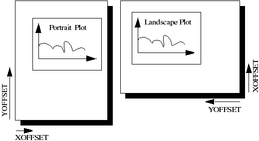
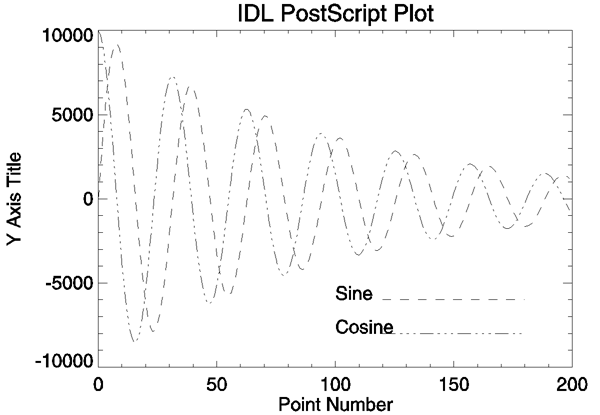
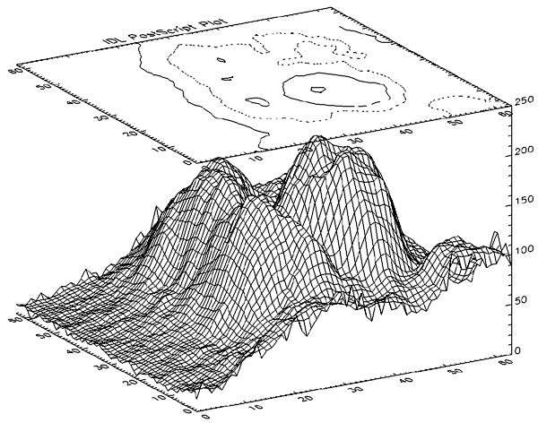
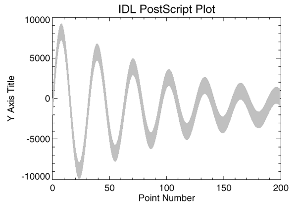
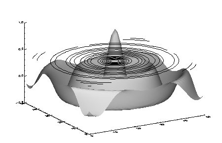
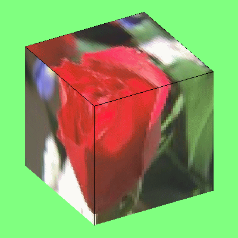

IDL Direct Graphics support graphic output to the devices listed below:
|
Device Name |
Description |
|
No graphics output |
|
The SET_PLOT procedure can be used to select the graphic device to which IDL directs its output. IDL Object Graphics does not rely on the concept of a current graphics device.
The DEVICE procedure controls the graphic device-specific functions. An attempt has been made to isolate all device-specific functions in this procedure. DEVICE controls the graphics device currently selected by SET_PLOT. When using DEVICE, it is important to make sure that the current graphics device is the one you intend to use. This is because most of the devices have different keywords—you will most likely get a Keyword ... ... not allowed in call to: Device error if you call DEVICE when the wrong device is selected.
The CGM, Computer Graphics Metafile, standard describes a device independent file format used for the exchange of graphic information. The IDL CGM driver produces CGM files encoded in one of three methods: Text, Binary or NCAR Binary. To direct graphics output to a CGM file, issue the command:
SET_PLOT,'CGM'
This causes IDL to use the CGM driver for producing graphical output. Once the CGM driver is selected, the DEVICE procedure controls its actions, as described below. Typing HELP, /DEVICE displays the current state of the CGM driver. The CGM driver defaults to the binary encoding using 256 colors.
See keywords accepted by display devices.
This section describes details specific to IDL’s CGM implementation:
; Select the CGM driver:
SET_PLOT, 'CGM'
; Create a 64 x 64 element array:
X = DIST(64)
; Display the image (fills entire screen):
TVSCL, X
; Now display 4 images on the screen:
ERASE
XS = !D.X_SIZE / 2 ; Size of each image, X dimension
YS = !D.Y_SIZE / 2 ; Size of each image, Y dimension
TVSCL, X, 0, XSIZE=XS, YSIZE=YS ; Upper left
TVSCL, X, 1, XSIZE=XS, YSIZE=YS ; Upper right
TVSCL, X, 2, XSIZE=XS, YSIZE=YS ; Lower left
TVSCL, X, 3, XSIZE=XS, YSIZE=YS ; Lower right
HP-GL (Hewlett-Packard Graphics Language) is a plotter control language used to produce graphics on a wide family of pen plotters. To use HP-GL as the current graphics device, issue the IDL command:
SET_PLOT,'HP'
See keywords accepted by display devices.
The Windows Metafile Format (WMF) is used by Windows to store vector graphics in order to exchange graphics information between applications. This format is only available on the Windows platforms. To direct graphics to a file in the WMF format, use the SET_PLOT procedure:
SET_PLOT, 'METAFILE'
See keywords accepted by display devices.
For example, the following will create a WMF file for a simple plot:
;Create X and Y Axis data
x=findgen(10)
y=findgen(10)
;Save current device name
mydevice=!D.NAME
;Set the device to Metafile
SET_PLOT, 'METAFILE'
;Name the file to be created
DEVICE, FILE='test.emf'
;Create the plot
PLOT, x, y
;Close the device which creates the Metafile
DEVICE, /CLOSE
;Set the device back to the original
SET_PLOT, mydevice
To suppress graphics output entirely, use the null device:
SET_PLOT, 'NULL'
PCL (Printer Control Language) is used by Hewlett-Packard laser and ink jet printers to produce graphics output. To direct graphics output to a PCL file, issue the command:
SET_PLOT,'PCL'
See keywords accepted by display devices.
The PRINTER device allows IDL Direct Graphics to be output to a system printer. To direct graphics output to a printer, issue the command:
SET_PLOT, 'printer'
See keywords accepted by display devices.
Note that the printer device is an IDL Direct Graphics device. Like other Direct Graphics devices, you must change to the new device and then issue the IDL commands that send output to that device. With the printer device, you must use the CLOSE_DOCUMENT keyword to the DEVICE routine to actually initiate the print job and make something come out of your printer.
PostScript is a programming language designed to convey a description of a page containing text and graphics. Many laser printers and high-resolution, high-quality photo typesetters support PostScript. Color output or direct color separations can be produced with color PostScript. To direct graphics output to a PostScript file, issue the command:
SET_PLOT, 'PS'
See keywords accepted by display devices.
This causes IDL to use the PostScript driver for producing graphical output. Once the PostScript driver is enabled via SET_PLOT, the DEVICE procedure is used to control its actions, as described below. The default PostScript settings are given in the following table:
|
Feature |
Value |
|---|---|
|
File |
idl.ps |
|
Mode |
Portrait, non-encapsulated, no color |
|
Horizontal offset |
3/4 in. |
|
Vertical offset |
5 in. |
|
Width |
7 in. |
|
Height |
5 in. |
|
Scale factor |
1.0 |
|
Font size |
12 points |
|
Font |
Helvetica |
|
# Bits / Image Pixel |
4 |
Note: Unlike monitors where white is the most visible color, PostScript writes black on white paper. Setting the output color index to 0, the default when PostScript output is selected, writes black. A color index of 255 writes white which is invisible on white paper. Color tables are not used with PostScript unless the color mode has been enabled using the DEVICE procedure. See Indexed Color Images, below.
To obtain adequate resolution, the device coordinate system used for PostScript output is expressed in units of 0.001 centimeter (i.e., 1000 pixels/cm).
Use the HELP, /DEVICE call to view the current font, file, and other options set for PostScript output.
Information necessary for rendering a set of 35 standard PostScript fonts are included with IDL. (The standard 35 fonts are the fonts found on the Apple Laserwriter II PostScript printer; the same fonts are found on almost any PostScript printer made in the time since the LaserWriter II appeared.)
If you have a color PostScript device you can enable the use of either indexed color or TrueColor for plotting.
Set the PostScript device to use indexed color with the statement:
DEVICE, DECOMPOSED=0, COLOR=1
In indexed color mode, color values are interpreted as indices into IDL’s current color table. For example, to draw a plot using the color specified by color index 160, use a statement like:
PLOT, INDGEN(10), COLOR = 160
Set the PostScript device to use 24-bit color (often referred to as TrueColor) with the statement:
DEVICE, DECOMPOSED=1, COLOR=1
In Decomposed color mode, 24-bit color specifications are interpreted as three 8-bit color values, where the least-significant 8 bits contain the red value, the next 8 bits contain the green value, and the most-significant 8 bits contain the blue value. 24-bit color values are most commonly specified using hexidecimal notation, in which the blue, green, and red values are encoded in a string with the following format:
'bbggrr'x
where bb is a hexidecimal number specifying the blue value, gg is a hexidecimal number specifying the green value, and rr is a hexidecimal number specifying the red value.
For example, to draw a plot using pure blue on a device that uses 24-bit color, use the following statement:
PLOT, INDGEN(10), COLOR = 'FF0000'x
Set the PostScript device to use color with the statement:
DEVICE, COLOR=1, BITS_PER_PIXEL=n
where the value of the BITS_PER_PIXEL keyword can be 1, 2, 4, or 8 bits, yielding 2, 4, 16, or 256 possible colors. In an indexed color image, each pixel value is used as an index into the current color table, thereby obtaining an RGB value for each possible pixel value. To allow pixels in the image to map to a full 256-entry color table, specify BITS_PER_PIXEL=8.
Note: In the case of indexed color images of fewer than 8 bits, the number of columns in the image should be an exact multiple of the number of pixels per byte (i.e., when displaying 4 bit images the number of columns should be even, and 2 bit images should have a column size that is a multiple of 4). If the image column size is not an exact multiple, extra pixels with a value of 255 are output at the end of each row. This causes no problems if the color white is loaded into the last color table entry, otherwise a stripe of the last (index 255) color is drawn to the right of the image.
Set the PostScript device to use color with the statement:
DEVICE, COLOR=1, BITS_PER_PIXEL=8
A TrueColor image consists of an array with three dimensions, one of which has a size of three, containing the three color components. It may be considered as three two dimensional images, one each for the red, green and blue components. Each two-dimensional channel uses eight bits per pixel, which combine to create the 24-bit (TrueColor) image.
Use the TRUE keyword to the TV and TVSCL procedures to indicate that the image is a TrueColor image and to specify the dimension over which color is interleaved. RGB data can be interleaved by pixel, by line, or by image. Use the TRUE keyword to specify the method of interleaving. A c column by l line TrueColor image is dimensioned as follows:
|
TRUE Value |
Dimensions |
Interleaving |
|---|---|---|
|
1 |
(3, c, l) |
Pixel |
|
2 |
(c, 3, l) |
Line or Row |
|
3 |
(c, l, 3) |
Image |
The following example writes a 24-bit image, interleaved over the first dimension, to a PostScript file:
; Save the original graphics device.
old_device = !D.NAME
; Change to the PostScript device.
SET_PLOT, 'PS'
; Specify an output filename.
outfile = DIALOG_PICKFILE(FILE='24bit.ps', /WRITE, $
PATH=GETENV('IDL_TMPDIR'))
; Set the PostScript device to create the output file in
; color. Use *8* bits per pixel, not 24.
DEVICE, FILE=outfile, /COLOR, BITS_PER_PIXEL=8
; Get some truecolor image data.
image = READ_IMAGE(FILEPATH('rose.jpg', SUBDIRECTORY=['examples', 'data']))
; Write the 24-bit image and close the file.
TV, image, TRUE=1
DEVICE, /CLOSE
; Return plotting to the original graphics device:
SET_PLOT, old_device
Unlike TrueColor plots using the DECOMPOSED keyword, TrueColor images are routed through IDL’s color tables. The red color table array contains the intensity translation table for the red image, and so forth. Assuming that the color tables have been loaded with the vectors R, G, and B, a pixel with a color value of (r, g, b) is displayed with a color of (Rr, Gg, Bb). As with other devices, a color table value of 255 represents maximum intensity, while 0 indicates an absence of the color. To pass the RGB pixel values without change, load the red, green and blue color tables with a ramp with a slope of 1.0:
TVLCT, INDGEN(256), INDGEN(256), INDGEN(256)
or with the LOADCT procedure:
; Load standard black/white table:
LOADCT, 0
Images that are displayed with a black background on a monitor frequently look better if the background is changed to white when displayed with PostScript. This is easily done with the statement:
a(WHERE(a EQ 0B)) = 255B
When the CMYK keyword is set, IDL converts the PostScript output to the CMYK color model as a final step. The indexed or RGB data is mapped to the cyan, magenta, yellow, and black color model just prior to output.
The CMYK format is a subtractive color model that is better suited for color printing. This color model allows some document processing applications and printer control software to easily adjust the overall brightness of an image by manipulating a single channel (K). PostScript files created with the CMYK color model must be processed by an interpreter capable of interpreting PostScript Language Level 2 or higher.
Often, IDL users are confused by the use of the XOFFSET and YOFFSET keywords to the PostScript DEVICE routine. These keywords control the position of IDL plots on the page. XOFFSET specifies the “X” position of the lower left corner of the output generated by IDL. This offset is always taken relative to the lower left-hand corner of the page when viewed in portrait orientation. YOFFSET specifies the “Y” position of the lower left corner of the output generated by IDL. This offset is also taken relative to the lower left-hand corner of the page when viewed in portrait orientation.
The following figure shows how the XOFFSET and YOFFSET keywords are interpreted by the PostScript device in the Portrait (left) and Landscape (right) modes. Note that the landscape plot uses the same origin for determining the effect of the XOFFSET and YOFFSET keywords, but that the output is rotated 270 degrees clockwise.

Interpretation of the XOFFSET and YOFFSET Keywords
The page on the left shows an IDL plot printed in “portrait” orientation. Note that the X and Y offsets work just as we expect them to—increasing the XOFFSET moves the plot to the right and increasing the YOFFSET moves the plot up the page. The page on the right shows an IDL plot printed in “landscape” orientation. Here, the X and Y offsets are still taken relative to the same points even though the orientation of the plot has changed. This happens because IDL moves the origin of the plot before rotating the PostScript coordinate system 270 degrees clockwise for the landscape plot.
Note: The XOFFSET and YOFFSET keywords have no effect when you generate ENCAPSULATED PostScript output.
Another form of PostScript output is Encapsulated PostScript. This is the format used to import PostScript files into page layout and desktop publishing programs. An Encapsulated PostScript (EPS) file is similar to a regular PostScript file except that it contains only one page of PostScript output contained in a “bounding box” that is used to tell other programs about the size and aspect ratio of the encapsulated image.
Most of the time, output from IDL to an EPS file is properly scaled into the EPS bounding box because commands such as PLOT take full advantage of the plotting area made available to them. Sometimes, however, the default bounding box is inappropriate for the image being displayed.
As an example, suppose you have an image that is narrow and tall that, when TV’ed to an IDL window, fills only a small portion of the plotting window. Similarly, when output to an EPS file, this image will only fill a small portion of the bounding box. When the resulting EPS file is brought into a desktop publishing program, it becomes very hard to properly scale the image since the aspect ratio of the bounding box bears no relation to the aspect ratio of the image itself.
To solve this problem, use the XSIZE and YSIZE keywords to the DEVICE procedure to make the bounding box just large enough to contain the image. Since IDL uses a resolution of 1000 dots per centimeter with the PostScript device, the correct XSIZE and YSIZE (in centimeters) can be computed as:
Note: The values of XSIZE and YSIZE for this device are effectively limited to a maximum of 11 inches due to the size of the memory map employed to render the graphics information.
The following IDL procedure demonstrates this technique. This procedure reads an X Windows Dump file and writes it back out as a properly-sized, 8-bit-color Encapsulated PostScript file:
PRO XWDTOEPS, filename
; Read the XWD file. Pixel intensity information is stored
; in the variable 'array'. Values to reconstruct the color
; table are stored in 'r', 'g', and 'b':
array = READ_XWD(filename, r, g, b)
; Reconstruct the color table:
TVLCT, r,g,b
; Display the image in an IDL window:
TV, array
; Find the size of the picture. The width of the picture
; (in pixels) is stored in s[1]. The height of the picture
; is stored in s[2]:
s = SIZE(array)
; Take the 'xwd' (for X Windows Dump) extension off of
; the old filename and replace it with 'eps':
fl = STRLEN(filename)
filename = STRMID(filename, 0, fl-4)
filename = filename + '.eps'
PRINT, 'Making file: ', filename
PRINT, s
; Set the plotting device to PostScript:
SET_PLOT, 'ps'
; Use the DEVICE procedure to make the output encapsulated,
; 8 bits, color, and only as wide and high as it needs to
; be to contain the XWD image:
DEVICE, /ENCAPSUL, BITS_PER_PIXEL=8, /COLOR, $
FILENAME=filename, XSIZE=S[1]/1000., $
YSIZE=S[2]/1000.
; Write the image to the file:
TV, array
; Close the file:
DEVICE, /CLOSE
; Return plotting to X Windows:
SET_PLOT, 'x'
END
To put multiple plots on the same PostScript page, use the !P.MULTI system variable (described in more detail in !P ). !P.MULTI is a 5-element integer array that controls the number of rows and columns of plots to make on a page or in a graphics window.
The first element of !P.MULTI is a counter that reports how many plots remain on the page. The second element of !P.MULTI is the number of columns per page. The third element is the number of rows per page.
For example, the following lines of code create a PostScript file,
multi.ps
, with 6 different plots arranged as 2 columns and 3 rows:
; Set plotting to PostScript:
SET_PLOT, 'PS'
; Set the filename:
DEVICE, FILENAME='multi.ps'
; Make IDL’s plotting area hold 2 columns and 3 rows of plots:
!P.MULTI = [0, 2, 3]
; Create a simple dataset:
A = FINDGEN(10)
; Make 6 different plots:
PLOT, A
PLOT, SIN(A)
PLOT, COS(A)
PLOT, TAN(A)
PLOT, TANH(A)
PLOT, SINH(A)
; Close the file:
DEVICE, /CLOSE
; Return plotting to Windows:
SET_PLOT, 'win'
; Reset plotting to 1 plot per page:
!P.MULTI = 0
The resulting file produces a set of plots as shown in the following figure:
Multiple plots on a single page produced by setting the !P.MULTI system variable.
This section shows how to generate IDL PostScript graphics so that they can be inserted into other documents. It also provides several examples of how the PostScript graphics device is used. Simply omit the ENCAPSULATED keyword from the calls to DEVICE if you wish to produce plots that can be printed directly. The following figure is an encapsulated PostScript file suitable for inclusion in other documents. The figure was produced with the following IDL statements. Note the use of the ENCAPSULATED keyword in the call to DEVICE:
; Select the PostScript driver:
SET_PLOT, 'PS'
; Note use of ENCAPSULATED keyword:
DEVICE, /ENCAPSULATED, FILENAME = 'pic1.ps'
x = FINDGEN(200)
; Plot the sine wave:
PLOT, 10000 * SIN(x/5) / EXP(x/100), $
LINESTYLE = 2, TITLE = 'IDL PostScript Plot', $
XTITLE = 'Point Number', YTITLE='Y Axis Title', $
FONT = 0
; Add the cosine:
OPLOT, 10000 * COS(x/5) / EXP(x/100), LINESTYLE = 4
; Annotate the plot:
XYOUTS, 100, -6000, 'Sine', FONT = 0
OPLOT, [120, 180], [-6000, -6000], LINESTYLE = 2
XYOUTS, 100, -8000, 'Cosine', FONT = 0
OPLOT, [120, 180], [-8000, -8000], LINESTYLE = 4

Sample PostScript plot using Helvetica font
The following figure is a more complicated plot. It demonstrates some of the three-dimensional plotting capabilities of IDL. It was produced with the following IDL statements:
; Select the PostScript driver:
SET_PLOT, 'PS'
; Note use of ENCAPSULATED keyword:
DEVICE, /ENCAPSULATED, FILENAME = 'pic2.ps'
; Access the data:
OPENR, 1, FILEPATH('abnorm.dat', SUBDIR=['examples', 'data'])
aa = ASSOC(1, BYTARR(64, 64, /NOZERO))
; Get a smoothed version:
a = SMOOTH(aa[0], 3)
; Generate the surface:
SURFACE, a, /SAVE, ZAXIS = 1, XSTYLE = 1, YSTYLE = 1
; Add the contour:
CONTOUR, a, /T3D, /NOERASE, ZVALUE = 1, $
XSTYLE = 1, YSTYLE = 1, C_LINESTYLE = [0,1,2], $
TITLE = 'IDL PostScript Plot'
CLOSE, 1

Three-Dimensional Plot with Vector-Drawn Characters
The following figure illustrates polygon filling. It was produced with the following IDL statements:
SET_PLOT, 'PS'
DEVICE, /ENCAPSULATED, FILENAME = 'pic3.ps'
x = FINDGEN(200)
; Upper sine wave:
a = 10000 * sin(x / 5) / exp(x / 100)
PLOT, a, /NODATA, TITLE = 'IDL PostScript Plot', $
XTITLE='Point Number', YTITLE='Y Axis Title', $
FONT = 0
; Vector of X vertices for polygon filling. Note that the
; ROTATE(V,2) function call returns the vector V in reverse order:
C = [X, ROTATE(X, 2)]
; Vector of Y vertices for polygon filling:
D = [A, ROTATE(A-2000, 2)]
; Fill the region using an intensity of about 75% white:
POLYFILL, C, D, COLOR=192

Polygon Filling Example
The following figure illustrates IDL PostScript images. In this case, the same image is reproduced four times. In each case, a different number of bits are used per image pixel. It was produced with the following IDL statements:
SET_PLOT, 'PS'
DEVICE, /ENCAPSULATED, FILENAME = 'pic4.ps'
; Open image file:
OPENR, 1, FILEPATH('people.dat', SUBDIR = ['examples','data'])
; Variable to hold image:
a = BYTARR(192, 192, /NOZERO)
; Input the image:
READU, 1, a
; Done with the file:
CLOSE, 1
; Add a color table ramp to the bottom of the image:
A[0,0] = BYTSCL(INDGEN(192))#REPLICATE(1,16)
; Output the image four times:
FOR i = 0,3 DO BEGIN
; Use 1, 2, 4, and 8 bits per pixel:
DEVICE, BITS_PER_PIXEL=2^i
; Output using TV with position numbers 0, 1, 2, and 3:
TV, a, i, XSIZE=2.5, YSIZE=2.5, /INCHES
ENDFOR
1, 2, 4, and 8-bit PostScript Images
The Microsoft Windows version of IDL uses the WIN device by default. This device is similar to the X Windows device described below. The WIN device is available only in IDL for Windows.
To set plotting to the Microsoft Windows device, use the command:
SET_PLOT, 'WIN'
See keywords accepted by display devices.
X Windows is a network-based windowing system. IDL uses the X System (often referred to simply as “X”), to provide an environment in which the user can create one or more independent windows, each of which can be used for the display of graphics and/or images.
In the X system, there are two basic cooperating processes: clients and servers. A server consists of a display, keyboard, and pointer (such as a mouse) as well as the software that controls them. Client processes (such as IDL) display graphics and text on the screen of a server by sending X protocol requests across the network to the server. Although in the most common case, the server and client reside on the same machine, this network based design allows much more elaborate configurations.
To use X Windows as the current graphics device, issue the IDL command:
SET_PLOT, 'X'
Use the statement:
HELP, /DEVICE
to view the current state of the X Windows driver.
See keywords accepted by display devices.
IDL supports multiple monitor configurations on X Windows in two ways:
1
in
ajax:0.1
). IDL applications use the DISPLAY_NAME keyword on WIDGET_BASE to specify on which monitor to open the widget.
In an X Multi-Screen configuration you can open a Direct Graphics window only on the default Display connection. This applies both to stand-alone Direct Graphics windows (e.g., PLOT) and WIDGET_DRAW widgets created with the GRAPHICS_LEVEL keyword set equal to any value other than 2.
In an XINERAMA configuration you can draw Direct Graphics on any monitor. This is because the extended desktop is one logical connection and is addressed with one X Display Name.
See the IDLsysMonitorInfo object for more information.
Visuals specify how the hardware deals with color. The X Window server (your display) may provide colors or only gray scale (black and white), or both. The color tables may be changeable from within IDL (read-write), or may be fixed (read-only). The value of each pixel value may be mapped to any color (Un-decomposed Colormap), or certain bits of each pixel are dedicated to the red, green, and blue primary colors (Decomposed Colormap).
There are six X Windows visual classes—read-write and read-only visuals for three types of displays: Gray Scale, Pseudo Color, and Decomposed Color. The names of the visuals are shown in the following table:
| Visual Name | Writable | Description |
|---|---|---|
| StaticGray | no | Gray scale |
| GrayScale | yes | Gray scale |
| StaticColor | no | Undecomposed color |
| PseudoColor | yes | Undecomposed color |
| TrueColor | no | Decomposed color |
| DirectColor | yes | Decomposed color |
IDL supports all six types of visuals, although not at all possible depths. UNIX X Window System users can use the command xdpyinfo to determine which visuals are supported by their systems.
Each X Window server has a default visual class. Many servers may provide multiple visual classes. For example, a server with display hardware that supports an 8-bit-deep, un-decomposed, writable color map (PseudoColor), may also easily provide StaticColor, StaticGray, and GrayScale visuals.
You can select the visual used by IDL using the DEVICE procedure before a window is created, or by including the resource idl.gr_visual in your X defaults file, as explained in Setting the X Window Defaults .
When opening the display, IDL asks the display for the following visuals, in order, until a supported visual class is found:
You can override this behavior by using the DEVICE routine to specify the desired visual class and depth before you create a window. For example, if you are using a display that supports both the TrueColor, 24-bit-deep visual, and an 8-bit-deep PseudoColor visual, IDL will select the 24-bit-deep TrueColor visual. To instead use PseudoColor, issue the following command before creating a window:
DEVICE, PSEUDO_COLOR = 8
The colormap/visual class combination is chosen when IDL first connects with the X Window server. Note that if you connect with the X server by creating a window or using the DEVICE keyword to the HELP procedure, the visual class will be set; it then cannot be changed until IDL is restarted. If you wish to use a visual class other than the default, be sure to set it with a call to the DEVICE procedure before creating windows or otherwise connecting with the X Window server.
Windows are created in two ways:
Once the visual class is selected, all subsequently-created windows share the same class and colormap. The number of simultaneous colors available is stored in the system variable !D.N_COLORS. The visual class and number of colors, once initialized, cannot be changed without first exiting IDL.
IDL chooses the type of colormap in the following manner:
WINDOW, COLORS = -8
Colormaps define the mapping from color index to screen color. Two attributes of colormaps are important to the IDL user: they may be private or shared; and they may be static or writable. These different types of colormaps are described below.
The window manager creates a colormap when it is started. This is known as the default colormap, and can be shared by most applications using the display. When each application requires a colormap entry (i.e., a mapping from a color index to a color), it allocates one from this shared table. Advantages and disadvantages of shared colormaps include:
An application can create its own private color map. Most hardware can only display a single colormap at a time, so these private colormaps are called virtual color maps, and only one at a time is actually in use and visible. When the window manager gives the color focus to a window with a private colormap, the X window system loads its virtual colormap into the hardware colormap.
As mentioned above, the contents of static colormaps are determined outside of IDL and cannot be changed. When using a static colormap, the TVLCT procedure simulates writable colormaps by finding the closest RGB color entry in the colormap to the requested color. The colormap translation table is then set to map IDL color indices to those of the closest colors in the colormap.
The colors present in the colormap may, and probably will, not match the requested colors exactly. For example, with a typical static color map, loading the IDL standard color table number 0, which consists of 256 intensities of gray, results in only 8 or 16 distinct intensities.
With static colormaps, loading a new color table does not affect the appearance of previously written objects. The internal translation tables are modified, which only affects objects that are subsequently written.
As mentioned above, colors from the shared colormap do not necessarily start from index zero, and are not necessarily contiguous. IDL preserves the illusion of a zero based contiguous colormap by maintaining a translation table between user color indices, which range from 0 to !D.TABLE_SIZE, and the actual pixel values allocated from the X server. Normally, the user need not be concerned with this translation table, but it is available using the statement:
DEVICE, TRANSLATION=T
This statement stores the current translation table, a 256 element byte vector, in the variable T. Element zero of the vector contains the value pixel allocated for the zeroth color in the IDL colormap, and so forth. In the case of a private colormap, each element of the translation vector contains it’s own index value, because private colormaps start at zero and are contiguous.
The translation table may be bypassed, allowing direct access to the display’s color indices, by setting the BYPASS_TRANSLATION keyword in the DEVICE procedure.
DEVICE, /BYPASS_TRANSLATION
Translation can be reestablished by setting the keyword to zero:
DEVICE, BYPASS_TRANSLATION=0
By default, the color translation tables are bypassed if the visual type is TrueColor or the visual type is DirectColor with a private colormap.
X Windows can direct graphics to windows or pixmaps. Windows are the usual windows that appear on the screen and contain graphics. Pixmaps are invisible graphics memory contained in the server. Drawing to a window produces a viewable result, while drawing to a pixmap simply updates the pixmap memory.
Pixmaps are useful because it is possible to write graphics to a pixmap and then copy the contents of the pixmap to a window where it can be viewed. Furthermore, this copy operation is very fast because it happens entirely within the server. Provided enough pixmap memory is available, this technique works very well for animating a series of images by placing the images into pixmap memory and then sequentially copying them to a visible window.
To create a pixmap, use the PIXMAP keyword with the WINDOW procedure. For example, to create a square pixmap with 128 pixels per side as IDL window 1, use the command:
WINDOW, 1, /PIXMAP, XSIZE=128, YSIZE=128
Once they are created, pixmaps are treated just like normal windows, although some operations (WSHOW for instance) don’t do anything useful when applied to a pixmap.
The following procedure shows how animation can be done using pixmap memory. It uses a series of 15 heart images taken from the file abnorm.dat. This file is supplied with all IDL distributions in the examples/data subdirectory of the main IDL directory. It creates a pixmap and writes the heart images to it. It then uses the COPY keyword of the DEVICE procedure to copy the images to a visible window.
Note: Pressing any key causes the display process to halt. If you are using the IDL Workbench interface, make sure the IDL Command Line view has the focus before pressing a key.
; Animate heart series:
PRO animate_heart
; Open the file containing the images:
OPENR, u, FILEPATH('abnorm.dat', SUBDIR = ['examples','data']), $
/GET_LUN
; Associate a file variable with the file. Each heart image
; is 64x64 pixels:
frame = ASSOC(u, BYTARR(64,64, /NOZERO))
; Window 0 is a pixmap which is 4 images tall and 4
; images wide. The images will be placed in this pixmap:
WINDOW, 0, /PIXMAP, XSIZE = 512, YSIZE = 512
; Write each image to the pixmap. SMOOTH is used to improve
; the appearance of each image and REBIN is used to
; enlarge/shrink each image to the final display size:
FOR i=0, 15-1 DO TV, REBIN(SMOOTH(frame[i],3), 128, 128),i
; Close the image file and free the file unit:
FREE_LUN, u
; The visible window will be used to display the animated heart
; cycle:
WINDOW, XSIZE = 128, YSIZE=128, TITLE='Heart', /FREE
; Current frame number:
i = 0L
; Display frames until any key is pressed:
WHILE GET_KBRD(0) EQ '' DO BEGIN
; Compute x and y locations of pixmap image’s lower left corner:
x = (i mod 4) * 128 & y = 384 - (i/4) * 128
; Copy the next image from the pixmap to the visible window:
DEVICE, COPY = [x, y, 128, 128, 0, 0, 0]
; Keep track of total frame count:
i = (i + 1) MOD 15
ENDWHILE
END
Animation sequences with more and/or larger images can be made. See the documentation for the XANIMATE procedure, which is a more generalized embodiment of the above procedure.
Note: Some X Windows servers will refuse to create a pixmap that is larger than the physical screen in either dimension.
Note: Excessive pixmap allocation can exhaust virtual storage, causing some X Windows servers to become unresponsive.
How a color (such as !P.COLOR) is interpreted by IDL (when a TrueColor visual is being utilized) depends in part upon the decomposed setting for the device.
To retrieve the decomposed setting:
DEVICE, GET_DECOMPOSED = currentDecomposed
To set the decomposed setting:
DEVICE, DECOMPOSED = newDecomposed
If the decomposed value is zero, colors (like !P.COLOR) are interpreted as indices into IDL's color table. A color should be in the range from 0 to !D.TABLE_SIZE - 1. The IDL color table contains a red, green, and blue component at a given index; each of these components is in the range of 0 up to 255.
Note: IDL’s color table does not map directly to a hardware color table for a TrueColor visual. If IDL’s color table is modified, for example using the LOADCT or TVLCT routines, then the new color table will only take effect for graphics that are drawn after it has been modified.
If the decomposed value is non-zero, colors (like !P.COLOR) are interpreted as a combination of red, green, and blue settings. The least significant 8 bits contain the red component, the next 8 bits contain the green component, and the most significant 8 bits contain the blue component.
In either case, the most significant bits of each of the resulting red, green, and blue components are utilized. The number of bits utilized per component depends upon the red, green, and blue masks for the visual. On UNIX systems, a new field (Bits Per RGB) has been added to the output from HELP, /DEVICE. This Bits Per RGB field indicates the amount of bits utilized for each component.
Tip:
The UNIX command
xdpyinfo
also provides information about each of the visuals.
You can set the initial default value of the following parameters by setting resources in the file .Xdefaults file in your home directory as follows:
| Resource Name | Description |
|---|---|
| idl.colors | The number of colors used by IDL. |
| idl.gr_depth | The depth, in bits, of the visual used by IDL. |
| idl.retain | The default setting for the retain parameter: 0=none, 1= by server, 2=by IDL. |
| idl.gr_visual | The type of visual: StaticGray, GrayScale, StaticColor, PseudoColor, TrueColor, or DirectColor. |
For example, to set the default visual to PseudoColor, and to allocate 100 colors, insert the following lines in your defaults file:
idl.gr_visual: PseudoColor
idl.colors: 100
The IDL Z-buffer device is a pseudo device that draws 2-D or 3-D graphics in a buffer contained in memory. This driver implements the classic Z buffer algorithm for hidden surface removal. Although primarily used for 3-D graphics, the Z-buffer driver can be used to create 2-D objects in a frame buffer in memory. The resolution (dimensions) of this device can be set by the user.
All of the IDL plotting and graphics routines work with the Z-buffer device driver. In addition, the POLYFILL procedure has a few keyword parameters, allowing Gouraud shading and warping images over 3-D polygons, that are only effective when used with the Z-buffer.
When used for 3-D graphics, two buffers are present: an 8-bit-deep or 24-bit deep frame buffer that contains the picture; and a 16-bit-deep Z-buffer of the same resolution, containing the z-value of the visible surface of each pixel. The Z-buffer is initialized to the depth at the back of the viewing volume. When objects are drawn, the z-value of each pixel is compared with the value at the same location in the Zbuffer, and if the z-value is greater (closer to the viewer), the new pixel is written in the frame buffer and the Z-buffer is updated with the new z-value.
The frame buffer is 8 bits deep by default, but can be configured to be 24 bits deep using the SET_PIXEL_DEPTH keyword to the DEVICE routine. In 8-bit mode, the low-order 8 bits of any color specification are written to the 8-bit frame buffer. In 24- bit mode, the behavior depends on the value of the DECOMPOSED keyword to the DEVICE routine. When DECOMPOSED=1 (the default), the 24-bit color specification is stored in the 24-bit frame buffer, providing TrueColor functionality. When DECOMPOSED=0, the lower 8 bits of the color specification are used to index the current color lookup table to obtain 3-channel color information to store in the 24-bit frame buffer. Use the SET_COLORS keyword to the DEVICE routine to limit the maximum color index value used in this process.
The Z-buffer device is a “pseudo device” in that drawing commands update buffers in memory rather than sending commands to a physical device or file. The TVRD function reads the contents of either buffer to an IDL array. This array may then be further processed, written to a file, or output to a raster-based graphics output device.
The Z-buffer driver can be used for 2-D graphics by disabling the depth computations.
To use the Z-buffer as the current graphics device, issue the IDL command:
SET_PLOT, 'Z'
Once the Z-buffer driver is enabled, the DEVICE procedure is used to control its actions, as described below.
Use the statement:
HELP, /DEVICE
to view the current state of the Z-buffer driver and the amount of memory used for the buffers.
See keywords accepted by display devices.
The contents of both frame and depth buffers are directly accessed by the TV (or TVSCL) and TVRD routines via the CHANNEL keyword. Access the buffers as follows, depending on the device pixel depth:
When the Z buffer device pixel depth is 8 bits (the default), the assignments for the CHANNEL keyword are:
| CHANNEL | Buffer | Data Type |
|---|---|---|
| 0 | 8-bit Frame Buffer (color indices) | byte |
| 1 | 16-bit Depth Buffer | signed integer |
Use CHANNEL=1 and set the WORDS keyword when reading or writing the depth buffer in 8-bit mode.
The Z buffer device ignores the TRUE keyword in 8-bit mode.
When the device pixel depth is 24 bits, the assignments for the CHANNEL keyword are:
| CHANNEL | Buffer | Data Type |
|---|---|---|
| 0 | 3 8-bit Frame Buffer channels (Red, Green, Blue) | byte |
| 1 | 8-bit Frame Buffer (Red channel) | byte |
| 2 | 8-bit Frame Buffer (Green channel) | byte |
| 3 | 8-bit Frame Buffer (Blue channel) | byte |
| 4 | 16-bit Depth Buffer | signed integer |
Use CHANNEL=4 and set the WORDS keyword when reading or writing the depth buffer in 24-bit mode.
In 24-bit mode, the interleave is controlled by the value of the TRUE keyword:
| TRUE | Interleave |
|---|---|
| 0 | None (see below) |
| 1 | Pixel |
| 2 | Row |
| 3 | Band |
If TRUE=0:
The normal procedure is to set the graphics device to “Z”, draw the objects, read the frame buffer, and then select another graphics device and write the image. For example, to create an image with the Z-buffer driver and then display it on an X-Window display:
; Select Z-buffer device:
SET_PLOT,'Z'
; Write objects to the frame buffer using normal graphics
; routines, e.g. PLOT, SURFACE, POLYFILL
... ... ...
; Read back the entire frame buffer:
a=TVRD()
; Select X Windows:
SET_PLOT,'X'
; Display the contents of the frame buffer:
TV, a
To read the depth values in the Z-buffer, use the command:
a = TVRD(CHANNEL=1, /WORDS)
To write the depth values, use the command:
TV, a, /WORDS, CHANNEL=1
The TV, TVSCL, and TVRD routines write or read pixels directly to a rectangular area of the designated buffer without affecting the other buffer.
The values in the depth buffer are short integers, scaled from -32765 to +32765, corresponding to normalized Z-coordinate values of 0.0 to 1.0, where 1.0 represents the plane closest to the viewer.
The Z device draws patterns specified via the PATTERN keyword to the POLYFILL procedure using one of two methods:
The following POLYFILL keywords are active only with the Z-buffer device: IMAGE_COORDINATES, IMAGE_INTERPOLATE, and TRANSPARENT. These parameters allow images, specified via the PATTERN keyword, to be warped over 2-D and 3-D polygons. The values of the IMAGE_INTERPOLATE and TRANSPARENT keywords apply only when IMAGE_COORDINATES are specified.
The Z device converts all image data specified with the PATTERN keyword to BYTE.
Image data can be supplied in either an [m x n] array (a single-channel image), or as an [3 x m x n] array (a three-channel image). Table A-21 describes how different types of image data interact with the device pixel depth and the DECOMPOSED setting of the device.
|
Z Device Pixel Depth |
Number of PATTERN Channels | DECOMPOSED Setting | Resulting Pattern Image |
|---|---|---|---|
| 8 | 1 | n/a | Grayscale |
| 8 | 3 | n/a | Grayscale, created from first (red) channel |
| 24 | 1 | 0 | Color table applied |
| 24 | 1 | 1 | Single image channel replicated to grayscale |
| 24 | 3 | n/a | True color |
The IMAGE_COORDINATES keyword specifies a [2 x n] array containing the image space coordinates that correspond to each of the n vertices of the polygon.
The IMAGE_INTERPOLATE keyword indicates that bilinear interpolation is to be used, rather than the default nearest neighbor sampling.
Pixels less than the value of the TRANSPARENT keyword are not drawn, simulating transparency. The TRANSPARENT keyword is a byte value. A three-channel image pixel is not drawn only when all three components are less than the TRANSPARENT value. If performing color table lookup (Z device pixel depth is 24, PATTERN is one channel, and DECOMPOSED=0), the pixel is not drawn if the single-channel pixel is less than the transparent value.
For Gouraud shading of polygons, the COLOR keyword can contain an array specifying the color index for each polygon vertex.
This example forms a Bessel function, draws its shaded surface and overlays its contour, using the Z-buffer as shown in the following figure. The final output is directed to a PostScript file.
; Store the original display device
oldDevice = !D.NAME
; Select the Z-buffer:
SET_PLOT, 'Z'
n = 50 ; Size of array for Bessel
; Make the Bessel function:
a = BESELJ(SHIFT(DIST(n), n/2, n/2)/2, 0)
; Draw the surface, label axes in black, background in white:
SHADE_SURF, a, /SAVE, COLOR=1, BACKGROUND=255
nlev = 8 ; Number of contour levels
; Make the Contour at normalized Z=.6:
CONTOUR, a, /OVERPLOT, ZVALUE=.6, /T3D, $
LEVELS=FINDGEN(nlev)*1.5/nlev-.5, COLOR=1
; Read image:
b=TVRD()
; Select PostScript output:
SET_PLOT, 'PS'
; Select a file name for the output file
DEVICE, FILENAME = DIALOG_PICKFILE(FILE='zbuffer-1.ps')
; Output the image:
TV, b
; Close the new PostScript file:
DEVICE, /CLOSE
; Select the original device:
SET_PLOT, oldDevice

Combined Shaded Surface and Contour Plot
If we use a 24-bit Z device, we can prepare a true color image that can then be displayed on a 24-bit display. (Here, we assume that the display monitor is a TrueColor device):
; Store the original display device
oldDevice = !D.NAME
DEVICE, GET_DECOMPOSED=oldDecomposed
; Select the Z-buffer:
SET_PLOT, 'Z'
DEVICE, SET_PIXEL_DEPTH=24, DECOMPOSED=0
LOADCT, 5
n = 50 ; Size of array for Bessel
; Make the Bessel function:
a = BESELJ(SHIFT(DIST(n), n/2, n/2)/2, 0)
; Draw the surface, label axes in black, background in white:
SHADE_SURF, a, /SAVE, COLOR=1, BACKGROUND=255
nlev = 8 ; Number of contour levels
; Make the Contour at normalized Z=.6:
CONTOUR, a, /OVERPLOT, ZVALUE=.6, /T3D, $
LEVELS=FINDGEN(nlev)*1.5/nlev-.5, COLOR=1
; Read image:
b=TVRD(/TRUE)
; Select the original device and set window size:
SET_PLOT, oldDevice
DEVICE, DECOMPOSED=oldDecomposed
WINDOW, XSIZE=(SIZE(b))[2], YSIZE=(SIZE(b))[3]
; Output the image:
TV, b, /TRUE
Using the 24-bit Z device, we can also modify the example to use full 24-bit color specifications, rather than picking colors from a color table:
; Store the original display device
oldDevice = !D.NAME
DEVICE, GET_DECOMPOSED=oldDecomposed
SET_PLOT, 'Z'
DEVICE, SET_PIXEL_DEPTH=24, DECOMPOSED=1
n = 50 ; Size of array for Bessel
; Make the Bessel function:
a = BESELJ(SHIFT(DIST(n), n/2, n/2)/2, 0)
; Draw the surface and axes in red, background in purple:
SHADE_SURF, a, /SAVE, COLOR='000000d2'x, BACKGROUND='00ff80c0'x
nlev = 8 ; Number of contour levels
; Make the Contour at normalized Z=.6:
CONTOUR, a, /OVERPLOT, ZVALUE=.6, /T3D, $
LEVELS=FINDGEN(nlev)*1.5/nlev-.5, $
C_COLORS=['00ffff00'x, '0000ffff'x, '00ff00ff'x]
; Read image:
b=TVRD(/TRUE)
; Select original output and set window size:
SET_PLOT, oldDevice
DEVICE, DECOMPOSED=oldDecomposed
WINDOW, XSIZE=(SIZE(b))[2], YSIZE=(SIZE(b))[3]
; Output the image:
TV, b, /TRUE
The 24-bit Z buffer device is useful for creating a TrueColor image from an 8-bit display. The following example creates (and then displays) an image file from a display window that uses an 8-bit color lookup table.
; Read an image file containing elevation data
file = FILEPATH('worldelv.dat', $
SUBDIRECTORY = ['examples', 'data'])
image = READ_BINARY(file, DATA_DIMS = [360, 360])
; Store the original display device
oldDevice = !D.NAME
DEVICE, GET_DECOMPOSED=oldDecomposed
; Write the image to the 24-bit Z buffer device, using a
; color lookup table. Note that we must set the DECOMPOSED
; keyword to zero to create the color image.
SET_PLOT, 'Z'
ERASE
DEVICE, SET_PIXEL_DEPTH=24
DEVICE, SET_RESOLUTION=[360,360]
DEVICE, DECOMPOSED=0
LOADCT, 33
TVLCT, 255,255,255, !D.TABLE_SIZE - 1
TVSCL, image
; Read the image array back from the Z buffer device
; and write it to a TIFF file.
new_image = TVRD(/TRUE)
new_file = GETENV('IDL_TMPDIR')+'world.tif'
WRITE_TIFF, new_file, new_image
; Change back to the original device
SET_PLOT, oldDevice
DEVICE, DECOMPOSED=oldDecomposed
; Read in the TIFF file and display it.
tif_image = READ_TIFF(new_file)
WINDOW, XSIZE=360, YSIZE=360, TITLE='Image read from TIFF file'
TV, tif_image, /TRUE
The following example warps an image to a cube as shown in the figure below. The lower two quadrants of the image are warped to the front two faces of the cube. The upper-right quadrant is warped to the top face of the cube.
; Read an image from a JPEG file and resize it to
; 100 by 100 pixels.
READ_JPEG, FILEPATH('rose.jpg', $
SUBDIRECTORY=['examples', 'data']), rose
nx = 100
ny = 100
rose = CONGRID(rose, 3, nx, ny)
; Store the original display device
oldDevice = !D.NAME
; Change to the Z buffer device
SET_PLOT, 'Z'
DEVICE, SET_PIXEL_DEPTH=24, SET_RESOLUTION=[400,400]
; Make a greenish background:
ERASE, '80ff80'x
; Establish 3-D scaling as (0,1) cube:
SCALE3, XRANGE=[0,1], YRANGE=[0,1], ZRANGE=[0,1]
; Define vertices of cube. Vertices 0-3 are bottom, 4-7 are top:
verts = [[0,0,0], [1,0,0], [1,1,0], [0,1,0], $
[0,0,1], [1,0,1], [1,1,1], [0,1,1]]
; Fill lower left face:
POLYFILL, verts[*, [3,0,4,7]], /T3D, PATTERN=rose, $
IMAGE_COORD=[[0,0], [nx/2,0], [nx/2,ny/2], [0,ny/2]]
; Fill lower right face:
POLYFILL, verts[*, [0,1,5,4]], /T3D, PATTERN=rose, $
IMAGE_COORD=[[nx/2,0], [nx-1,0], $
[nx-1,ny/2], [nx/2,ny/2]]
; Fill top face:
POLYFILL, verts[*, [4,5,6,7]], /T3D, PATTERN=rose, $
IMAGE_COORD = [[nx/2,ny/2], [nx-1,ny/2], $
[nx-1,ny-1], [nx/2,ny-1]]
; Draw edges of cube in black:
PLOTS, verts[*, [0,4]], /T3D, COLOR=0
; Edges of top face:
PLOTS, verts[*, [4,5,6,7,4]], /T3D, COLOR=0
img = TVRD(/TRUE)
; Change back to the original device and display:
SET_PLOT, oldDevice
WINDOW, XSIZE=400, YSIZE=400
TV, img, /TRUE

TrueColor Image Warped to a Cube Using the Z-Buffer